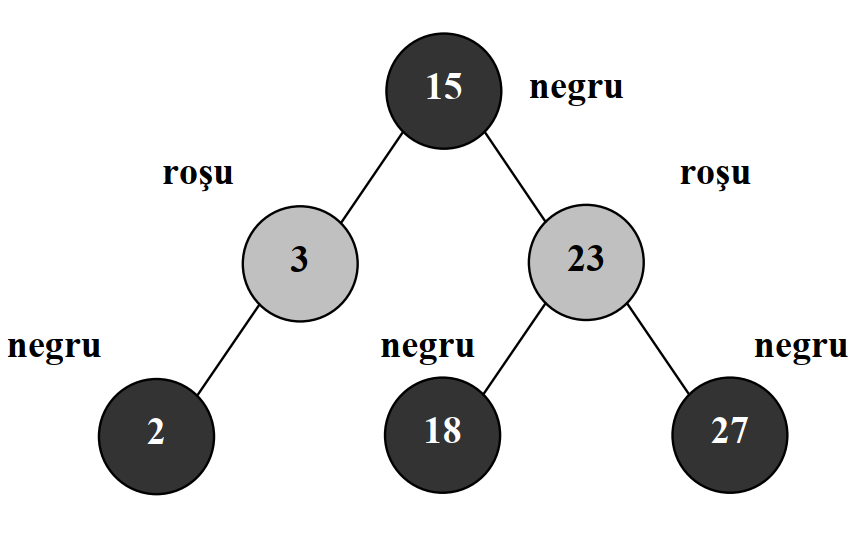
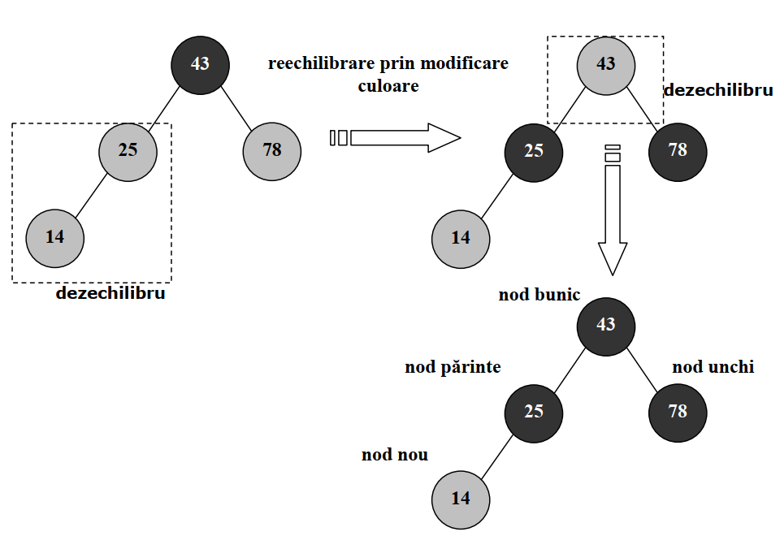
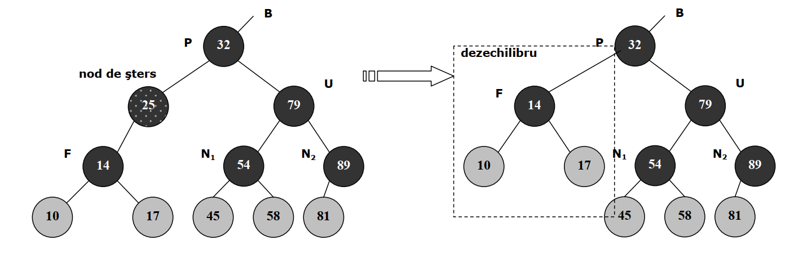
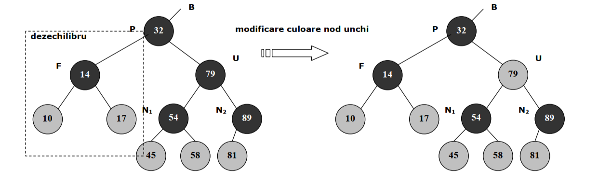

Problema apare din dorinta de a realiza cautarea unui element dint-un set de date cat mai eficient. Acest lucru este necesar in nenumarate arii ale informaticii. De aceea, apare idee retinerii datelor intr-o structura arborescenta numita arbore binar de cautare. Arborele binar de cautare este un arbore binar cu proprietatea ca pentru oricare nod al sau, cheile nodurilor din subarborele stanga (cu radacina in nodul respectiv) sunt strict mai mici, iar cheile nodurilor din subarborele drept (cu radacina in nodul respectiv) sunt strict mai mari. Acesta este un arbore binar de cautare:
Utilizarea acestei structuri de date presupune existenta a trei operatii:
In urma executarii oricarei operatii, arborele binar de cautare trebuie sa isi pastreze proprietatea specifica, dispunerea nodurilor in functie de relatia de ordine dintre cheile sale. Oricare dintre cele trei operatii presupune parcurgerea arborelui, care, in cazul defavorabil, resupunea parcurgerea a H noduri, unde H este adancimea arborelui, complexitatea fiind O(H) pentru inserare, stergere si cautare.
In functie de dispunerea datelor de intrare adancimea H variaza, de aceea apare nevoia mentinerii adancimii arborelui la log(N), unde N este numarul de noduri. Se introduce notiune de arbore binar echilbrat pentru realizarea cat mai eficienta a operatilor, complexitatea operatilor intr-un astfel de arbore fiind de ordinul O[log(N)].
Arborii rosu-negru sunt arbori care se echilibreaza automat, dupa fiecare procedeu de inserare sau stergere. Precum in cazul arborilor AVL, mentinerea echilbrului se realizeaza prin rotatii, dar si prin colorari ale nodurilor. Fiecarui nod ii asociem o culoare, rosie sau neagra. Acesta este un arbore rosu-negru:

Un arbore binar de cautare este un arbore rosu-negru daca respecta urmatoarele 4 proprietati esentiale:
Se demonstreaza faptul ca daca arborele binar de cautare respecta proprietatiile de mai sus acesta va avea inaltimea de ordin logaritmic, mai exact adancimea H a unui arbore rosu negru este mai mica sau egala ca log(N+1), unde N este numarul de noduri.
Inserarea intr-un arbore rosu-negru pleaca de la o inserare intr-un arbore binar de cautare obisnuit. Pentru ca in urma acestei inserari se invalideaza unele din proprietatile unui arbore rosu-negru, se produce un dezechilibru si trebuie sa ”reparam” inserarea, utilizand o serie de operatii de rotatie si recolorare. Spre exemplu, in urma inserarii unui nod se poate identifica situatia in care avem doua noduri rosii consecutive. Acest lucru nu este permis, deoarece incalca proprietatea 4: Daca un nod este rosu, ambii fii ai sai sunt negrii. Acest tip de dezechilibru se poate rezolva recolorand succesiv nodurile.
Acesta este un exemplu ilustrativ in care se rezolva un dezechilibru aparut in urma inserarii:

Astfel arborele obtinut din figura de mai sus este echilibrat, respectand toate proprietatiile specifice.
Operatia de stergere decurge asemanator cu cea de inserare. Intai se sterge nodul ca intr-un arbore binar de cautare obisnuit, neechilibrat, iar apoi incepe procesul de reechilibrare. In urma stergerii unui nod, proprietatiile de la P1 la P4 pot fi incalcate.
In cazul operatiei de stergere avem mai multe situatii:
Dupa aceasta interschimbare, problema revine (in maniera recursiva) la stergerea celuilalt nod. Astfel, in cele din urma cazul in care un nod are doi fii recurgere la unul din primele doua cazuri. Acesta este un exemplu de stergere intr-un arbore rosu-negru.

Observam ca dupa operatia de stergere, arborele s-a dezechilibrat, astfel ca sunt necesare alte operatii pentru a mentine echilibrul:

Arborele obtinut mai jos este echilibrat si respecta toate proprietatiile specifice acestei structuri de date.
Aceasta este implementarea in C++:
#ifndef RB
#define RB
#include
#include
#include
enum Color {RED, BLACK};
struct Node
{
int val;
Node *parent;
Node *left;
Node *right;
bool color;
Node(int x)
{
val = x;
left = right = parent = 0;
color = 0;
}
};
void inorder(Node* root)
{
//stanga, radacina, dreapta
if(root == NULL)
return;
inorder(root->left);
std::cout<val<<' ';
inorder(root->right);
}
void preorder(Node* root)
{
//radacina, stanga, dreapta
if(root == NULL)
return;
std::cout<val<<' ';
preorder(root->left);
preorder(root->right);
}
void postorder(Node* root)
{
//stanga, dreapta, radacina
if(root == NULL)
return;
postorder(root->left);
postorder(root->right);
std::cout<val<<' ';
}
void levelorder(Node* root)
{
//parcurgere pe nivele
if(root == NULL)
return;
std::queue Q;
Q.push(root);
while(!Q.empty())
{
Node* nod = Q.front();
Q.pop();
std::cout<val<<' ';
if(nod->left != NULL)
Q.push(nod->left);
if(nod->right != NULL)
Q.push(nod->right);
}
}
Node* search(Node* root, int val)
{
if(root == NULL || root->val == val)
{
//am gasit nodul(il intoarcem)/nu am gasit nodul(intoarcem null)
return root;
}
if(root->val < val)
{
//nodul cautat are valore mai mare, continuam in subarborele drept
return search(root->right, val);
}
if(root->val > val)
{
//nodul cautat are valore mai mica, continuam in subarborele stang
return search(root->left, val);
}
}
void rotateLeft(Node*& root, Node*& nod)
{
Node *nod_right = nod->right;
nod->right = nod_right->left;
if (nod->right != NULL)
nod->right->parent = nod;
nod_right->parent = nod->parent;
if (nod->parent == NULL)
root = nod_right;
else if (nod == nod->parent->left)
nod->parent->left = nod_right;
else
nod->parent->right = nod_right;
nod_right->left = nod;
nod->parent = nod_right;
}
void rotateRight(Node *&root, Node *&nod)
{
Node *nod_left = nod->left;
nod->left = nod_left->right;
if (nod->left != NULL)
nod->left->parent = nod;
nod_left->parent = nod->parent;
if (nod->parent == NULL)
root = nod_left;
else if (nod == nod->parent->left)
nod->parent->left = nod_left;
else
nod->parent->right = nod_left;
nod_left->right = nod;
nod->parent = nod_left;
}
Node* get_sibling(Node* nod)
{
if(nod->parent!= NULL)
{
if(nod->parent->right == nod)
return nod->parent->left;
else return nod->parent->right;
}
else return NULL;
}
Node* basic_insert(Node*& root, Node* nod)
{
if(root==NULL)
return nod;
if(nod->val > root->val)
{
root->right = basic_insert(root->right, nod);
root->right->parent = root;
}
else
{
root->left = basic_insert(root->left, nod);
root->left->parent = root;
}
return root;
}
void fix_insert(Node *&root, Node *&nod)
{
Node *parent = NULL;
Node *grandParent = NULL;
Node *uncle = NULL;
while(nod!=root && nod->color != BLACK && nod->parent->color == RED)
{
parent = nod->parent;
grandParent = nod->parent->parent;
if(parent == grandParent->left)
{
uncle = grandParent->right;
if(uncle!=NULL && uncle->color==RED)
{
grandParent->color = RED;
parent->color = BLACK;
uncle->color = BLACK;
nod = grandParent;
}
else
{
if(nod == parent->right)
{
rotateLeft(root, parent);
nod = parent;
parent = nod->parent;
}
rotateRight(root, grandParent);
std::swap(parent->color, grandParent->color);
nod = parent;
}
}
else
{
uncle = grandParent->left;
if(uncle!=NULL && uncle->color==RED)
{
grandParent->color = RED;
parent->color = BLACK;
uncle->color = BLACK;
nod = grandParent;
}
else
{
if(nod == parent->left)
{
rotateRight(root, parent);
nod = parent;
parent = nod->parent;
}
rotateLeft(root, grandParent);
std::swap(parent->color, grandParent->color);
nod = parent;
}
}
}
root->color = BLACK;
}
Node* insert(Node *&root, Node *&nod)
{
root = basic_insert(root, nod);
fix_insert(root, nod);
return root;
}
Node* succesor(Node* nod)
{
Node* temp = nod;
while(temp->left!=NULL)
temp=temp->left;
return temp;
}
Node* replacement(Node* nod)
{
if(!nod->left && !nod->right)
return NULL;
else
if(!nod->left)
return nod->right;
else
if(!nod->right)
return nod->left;
else
return succesor(nod->right);
}
void fixDoubleBlack(Node* root, Node* x)
{
if(x==root)
return;
Node* sibling = get_sibling(x);
Node* parent = x->parent;
if(!sibling)
fixDoubleBlack(root, parent);
else
{
if(sibling->color == RED)
{
parent->color = RED;
sibling->color = BLACK;
if(sibling -> parent -> left == sibling)
rotateRight(root, parent);
else
rotateLeft(root, parent);
fixDoubleBlack(root, x);
}
else
{
if((sibling->left && sibling->left->color == RED) || (sibling->right && sibling->right->color == RED))
{
//macar unu rosu
if(sibling->left && sibling->left->color == RED)
{
//LEFT LEFT
if(sibling -> parent -> left == sibling)
{
sibling->left->color = sibling->color;
sibling->color = parent->color;
rotateRight(root, parent);
}
//RIGHT LEFT
else
{
sibling->left->color = parent->color;
rotateRight(root, sibling);
rotateLeft(root, parent);
}
}
else
{
//LEFT RIGHT
if(sibling -> parent -> left == sibling)
{
sibling->right->color = parent->color;
rotateLeft(root, sibling);
rotateRight(root, parent);
}
//RIGHT RIGHT
else
{
sibling->right->color = sibling->color;
sibling->color = parent->color;
rotateLeft(root, parent);
}
}
parent->color = BLACK;
}
else
{
//amandoi negrii
sibling->color = RED;
if(parent->color == BLACK)
fixDoubleBlack(root, parent);
else
parent->color = BLACK;
}
}
}
}
void erase(Node* root, Node* v)
{
Node* u = replacement(v);
bool uvBlack = false;
if((u==NULL||u->color == BLACK) && (v->color==BLACK))
uvBlack = true;
Node* parent = v->parent;
if(u==NULL) //v leaf
{
if(v==root)
root=NULL;
else
{
if(uvBlack)
fixDoubleBlack(root, v);
else
{
Node* s = get_sibling(v);
if(s != NULL)
s->color = RED;
}
if(v == parent->left)
parent->left = NULL;
else parent->right = NULL;
}
delete v;
return;
}
if(v->left == NULL || v->right == NULL)
{
if(v==root)
{
v->val = u->val;
v->left = v->right = NULL;
delete u;
}
else
{
if(parent->left == v)
parent->left = u;
else
parent->right = u;
delete v;
u->parent = parent;
if(uvBlack)
fixDoubleBlack(root, u);
else
u->color = BLACK;
}
return;
}
std::swap(u->val, v->val);
erase(root,u);
}
class RBTree
{
private:
Node* root;
public:
RBTree();
void Insert(int val);
void Erase(int val);
bool Search(int val);
void Inorder();
void Preorder();
void Postorder();
void LevelOrder();
};
RBTree::RBTree()
{
root = NULL;
}
void RBTree::Insert(int val)
{
Node* nod = new Node(val);
root = insert(root, nod);
}
void RBTree::Erase(int val)
{
Node* nod = search(root, val);
erase(root, nod);
}
bool RBTree::Search(int val)
{
return (search(root, val) != NULL);
}
void RBTree::Inorder()
{
inorder(root);
std::cout<<'\n';
}
void RBTree::Preorder()
{
preorder(root);
std::cout<<'\n';
}
void RBTree::LevelOrder()
{
levelorder(root);
std::cout<<'\n';
}
void RBTree::Postorder()
{
postorder(root);
std::cout<<'\n';
}
#endif